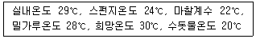

제과기능사 (2002-10-06 기출문제)
1과목: 제조이론
1. 데블스 푸드 케이크(Devil's food cake)에서 꼭 필요한 재료는?
- 향료
- 코코아
- 명반
- 전분
(정답률: 98%)

2. 케이크의 대표적인 믹싱 방법인 크림법에 대한 설명으로 적당한 것은?
- 쇼트닝과 밀가루를 먼저 믹싱한다.
- 쇼트닝과 설탕을 먼저 믹싱한다.
- 설탕과 물을 먼저 믹싱한다.
- 전 재료를 한꺼번에 믹싱한다.
(정답률: 96%)
3. 반죽 온도를 너무 낮게 하여 만든 케이크 도넛의 설명 중 잘못된 것은?
- 공모양의 도넛이 된다.
- 점도가 약하게 된다.
- 과량의 기름을 흡수한다.
- 부피가 작게 된다.
(정답률: 71%)
4. 도넛에 묻힌 설탕이 녹는 현상을 제거하기 위한 방법이 아닌 것은?
- 점착력이 있는 튀김기름 사용
- 충분히 냉각시킨 후 설탕을 묻힘
- 냉각 중 환기를 충분히 함
- 튀김 시간을 짧게 함
(정답률: 84%)
5. 유화쇼트닝을 60% 사용한 옐로우 레이어 케이크 배합에 32%의 초콜릿을 넣어 초콜릿 케이크를 만들 때 원래의 쇼트닝 60%는 얼마로 조절해야 하는가?
- 48 %
- 54 %
- 60 %
- 72 %
(정답률: 75%)
6. 롤 케이크를 말 때 표면이 터지는 결점에 대한 조치사항 설명으로 틀리는 항목은?
- 설탕의 일부를 물엿으로 대치하여 사용한다.
- 배합에 덱스트린을 사용하여 점착성을 증가시킨다.
- 팽창제나 믹싱을 줄여 과도한 팽창을 방지한다.
- 낮은 온도의 오븐에서 서서히 굽는다.
(정답률: 85%)
7. 같은 용적의 팬에 같은 무게의 반죽을 팬닝하였을 경우 부피가 가장 적은 제품은?
- 시퐁 케이크
- 레이어 케이크
- 파운드 케이크
- 스펀지 케이크
(정답률: 79%)
8. 가압하지 않는 찜기의 내부 온도로 가장 적당한 것은?
- 65℃
- 97℃
- 150℃
- 200℃
(정답률: 90%)
9. 핑거 쿠키 성형방법 중 옳지 않은 것은?
- 원형깍지를 이용하여 일정한 간격으로 짠다.
- 철판에 기름을 바르고 짠다.
- 5∼6㎝ 정도의 길이로 짠다.
- 짠 뒤 윗면에 고르게 설탕을 뿌려준다.
(정답률: 57%)
10. 레몬즙이나 식초를 첨가한 반죽을 구웠을 때 나타나는 현상은?
- 조직이 치밀하다.
- 껍질색이 진하다.
- 향이 짙어진다.
- 부피가 증가한다.
(정답률: 50%)
11. 아이싱에 이용되는 퐁당(fondant)은 설탕의 어떤 성질을 이용하는가?
- 설탕의 보습성
- 설탕의 재결정성
- 설탕의 용해성
- 설탕이 전화당으로 변하는 성질
(정답률: 90%)
12. 포장시에 제품의 냉각 온도로 가장 적당한 것은?
- 22℃
- 30℃
- 37℃
- 47℃
(정답률: 73%)
13. 오븐을 열원에 따라 분류했을 때 사용치 않는 열원은?
- 석탄 오븐
- 가스 오븐
- 전기 오븐
- 오일 오븐
(정답률: 84%)
14. 케이크 반죽의 비중에 관한 설명으로 맞는 것은?
- 비중이 높으면 제품의 부피가 크다.
- 비중이 낮으면 공기가 적게 포함되어 있음을 의미한다.
- 비중이 낮을수록 제품의 기공이 조밀하고 조직이 묵직하다.
- 일정한 온도에서 반죽의 무게를 같은 부피의 물의 무게로 나눈 값이다.
(정답률: 94%)
15. 기공조직이 스펀지 케이크와 유사하며 흰자만으로 제조 되는 거품형 반죽 케이크는?
- 파운드 케이크
- 화이트 레이어 케이크
- 옐로우 레이어 케이크
- 엔젤 푸드 케이크
(정답률: 80%)
16. 빵의 팬닝(팬넣기)에 있어 팬의 온도로 가장 적합한 것은?
- 냉장온도(0∼ 5℃)
- 20∼24℃
- 30∼35℃
- 60℃ 이상
(정답률: 81%)
17. 굽기에 있어서 껍질색 형성이 어려운 조건은?
- 과숙성 반죽
- 분유가 많은 반죽
- 스펀지법의 반죽
- 유화제가 들어있는 반죽
(정답률: 75%)
18. 스펀지에 밀가루 사용량을 증가시킴으로 발생되는 것이 아닌 것은?
- 기공이 조밀함
- 완제품의 부피가 커짐
- 생지 반죽시간의 단축
- 플로어 타임이 짧음
(정답률: 66%)
19. 소금을 늦게 넣어 믹싱 시간을 단축하는 방법은?
- 염장법
- 후염법
- 염지법
- 훈제법
(정답률: 91%)
20. 발효 손실의 원인이 아닌 것은?
- 수분 증발
- 탄수화물이 탄산가스로 전환
- 탄수화물이 알콜로 전환
- 재료 계량의 오차
(정답률: 85%)
2과목: 재료과학
21. 2차 발효실의 습도가 가장 높아야 할 제품은?
- 바게트
- 하드롤
- 햄버거빵
- 도넛
(정답률: 95%)
22. 빵 전분의 노화정도를 측정하는데 사용하는 방법과 관련이 없는 것은?
- 비스코그래프에 의한 측정
- 빵 속살의 흡수력 측정
- X-선 회절도에 의한 측정
- 패리노그래프에 의한 측정
(정답률: 89%)
23. 아래와 같은 조건일 때 스펀지 법에서 도우의 물 온도는 몇 도가 적당한가?

- 13℃
- 17℃
- 25℃
- 0℃
(정답률: 64%)
24. 제빵에서 믹싱의 주된 기능은?
- 거품 포집, 재료분산, 혼합
- 재료 분산, 온도상승, 글루텐 완화
- 혼합, 이김, 두드림
- 혼합, 거품 포집, 온도상승
(정답률: 81%)
25. 표준 스트레이트법을 비상 스트레이트법으로 전환할 때 필수적인 조치사항이 아닌 것은?
- 물사용량을 1% 감소
- 이스트 사용량을 2배 증가
- 설탕 사용량을 1% 증가
- 반죽시간 증가
(정답률: 60%)
26. 포장재료가 갖추어야 할 조건이 아닌 것은?
- 흡수성이 있고 통기성이 없어야 한다.
- 제품의 상품가치를 높일 수 있어야 한다.
- 단가가 낮아야 한다.
- 위생적이어야 한다.
(정답률: 86%)
27. 냉동반죽법에 대한 설명 중 틀린 것은?
- 저율배합 제품은 냉동시 노화의 진행이 비교적 빠르다.
- 고율배합 제품은 비교적 완만한 냉동에 견딘다.
- 저율배합 제품일수록 냉동 처리에 더욱 주의해야 한다.
- 식빵 반죽은 비교적 노화의 진행이 느리다.
(정답률: 68%)
28. 파이롤러의 사용에 가장 적합한 제품은?
- 식빵
- 앙금빵
- 크로와상
- 모카빵
(정답률: 94%)
29. 다음 중 함께 계량 할 때 가장 문제가 되는 재료는?
- 소금, 설탕
- 밀가루, 반죽 개량제
- 이스트, 소금
- 밀가루, 호밀가루
(정답률: 86%)
30. 1인당 생산가치는 생산가치를 무엇으로 나누어 계산하는가?
- 인원수
- 시간
- 임금
- 원재료비
(정답률: 95%)
3과목: 영양학
31. 단백질 분해효소는?
- 찌마아제
- 말타아제
- 프로테아제
- 인버타아제
(정답률: 43%)
32. 퍼프 페이스트리(Puff Pastry)에 사용하는 유지의 성질 중 중요하지 않은 것은?
- 수분을 적량 함유해야 한다.
- 융점이 높아야 한다.
- 가소성이 좋아야 한다.
- 유화 능력이 커야 한다.
(정답률: 56%)
33. 퐁당 아이싱의 끈적거림을 배제하는 방법으로 잘못된 것은?
- 아이싱에 최소의 액체를 사용한다.
- 안정제(한천 등)를 사용한다.
- 흡수제(전분 등)를 사용한다.
- 케이크 온도가 높을 때 사용한다.
(정답률: 93%)
34. 지방은 지방산과 어느 것이 결합되어 이루어지는가?
- 아미노산
- 나트륨
- 글리세린
- 리보오스
(정답률: 62%)
35. 식빵용 밀가루의 습부량(젖은 글루텐 함량)으로 가장 적당한 것은?
- 15%
- 25%
- 35%
- 45%
(정답률: 56%)
36. 다음 어느 소맥분을 사용하는 것이 경제적인가?
- 수분 13% 함유한 소맥분 가격 kg 당 220원
- 수분 13.5% 함유한 소맥분 가격 kg 당 210원
- 수분 12% 함유한 소맥분 가격 kg 당 235원
- 수분 12.5% 함유한 소맥분 가격 kg 당 230원
(정답률: 90%)
37. 시유의 일반적인 단백질과 지방 함량은?
- 약 20% 이상씩
- 약 15% 이상씩
- 약 10% 정도씩
- 약 3% 정도씩
(정답률: 65%)
38. 계란 중에서 껍질을 제외한 고형질은 몇%인가?
- 15%
- 25%
- 35%
- 45%
(정답률: 68%)
39. 이스트에 거의 들어있지 않는 효소로 일명 디아스타제라고도 불리우는 것은?
- 인버타아제
- 아밀라아제
- 프로테아제
- 말타아제
(정답률: 71%)
40. 압착 효모(생이스트)의 고형분 함량은 보통 얼마인가?
- 10%
- 30%
- 50%
- 60%
(정답률: 51%)
41. 글리코겐을 설명하는 말이 아닌 것은?
- 일명 동물성 전분이라고도 말한다.
- 주로 간이나 근육조직에 저장된다.
- 분자량은 전분보다 적지만 가지가 훨씬 많다.
- 글리코겐은 쓴맛을 갖는다.
(정답률: 90%)
42. 제빵용 밀가루에서 빵 발효에 많은 영향을 주는 손상전분의 적정한 함량은?
- 0%
- 1∼3.5 %
- 4.5 ∼8%
- 9∼12.5 %
(정답률: 84%)
43. 설탕 200g을 물 100g에 녹여 액당(液糖)을 만들었다면 이 액당의 당도는?
- 50 %
- 66.7 %
- 75 %
- 200 %
(정답률: 84%)
44. 반죽 개량제에 대한 설명 중 틀린 것은?
- 반죽개량제는 빵의 품질과 기계성을 증가시킬 목적으로 첨가한다.
- 산화제 , 환원제, 반죽 강화제, 노화지연제, 효소 등이 있다.
- 산화제는 반죽의 구조를 강화시켜 제품의 부피를 증가시킨다.
- 환원제도 반죽의 구조를 강화시켜 반죽시간을 증가 시킨다.
(정답률: 73%)
45. 술에 관한 설명 중 틀린 것은?
- 제과 ·제빵에서 술을 사용하는 이유 중의 하나는 바람직하지 못한 냄새를 없애주는 것이다.
- 양조주란 곡물이나 과실을 원료로 하여 효모로 발효 시킨 것으로 알콜 농도가 낮다.
- 증류주란 발효시킨 양조주를 증류한 것으로 알콜 농도가 높다.
- 혼성주란 증류주를 기본으로 하여 정제당을 넣고 과실 등의 추출물로 향미를 내게 한 것으로 알콜 농도가 낮다.
(정답률: 88%)
46. 당뇨병과 직접적인 관계가 있는 것은?
- 필수 아미노산
- 필수 지방산
- 비타민
- 포도당
(정답률: 73%)
47. 동물성 지방을 많이 섭취하였을 때 발생할 수 있는 질병 은?
- 신장병
- 골다공증
- 부종
- 동맥경화증
(정답률: 88%)
48. 소장에서 흡수되는 당류의 흡수 속도가 바르게 된 것은?
- 포도당 ＞ 과당 ＞ 갈락토오스 ＞ 자일로스
- 포도당 ＞ 갈락토오스 ＞ 과당 ＞ 자일로스
- 갈락토오스 ＞ 포도당 ＞ 과당 ＞ 자일로스
- 갈락토오스 ＞ 과당 ＞ 포도당 ＞ 자일로스
(정답률: 45%)
49. 옥수수 단백질인 제인에 특히 부족한 아미노산은?
- 트레오닌, 로이신
- 트레오닌, 페닐알라닌
- 트립토판, 메티오닌
- 트립토판, 발린
(정답률: 86%)
50. 지용성 비타민과 관계있는 물질은?
- L-ascorbic acid
- β-carotene
- Niacin
- Thiamin
(정답률: 93%)
4과목: 식품위생학
51. 식품의 부패 요인과 가장 거리가 먼 것은?
- 습도
- 온도
- 가열
- 공기
(정답률: 85%)
52. 식품 중의 대장균군을 위생학적으로 중요하게 다루는 주된 이유는?
- 식중독균이기 때문에
- 분변세균의 오염지침이기 때문에
- 부패균이기 때문에
- 대장염을 일으키기 때문에
(정답률: 75%)
53. 제1군 전염병으로 소화기계 전염병은?
- 결핵
- 화농성 피부염
- 장티푸스
- 독감
(정답률: 78%)
54. 테트로도톡신(Tetrodotoxin)은 다음 어느 식중독의 원인물질인가?
- 조개 식중독
- 버섯 식중독
- 복어 식중독
- 감자 식중독
(정답률: 97%)
55. 목화씨 속에 함유될 수 있는 독성분은?
- 아트로핀(atropin)
- 리시닌(ricinin)
- 고시폴(gossypol)
- 아코니틴(aconitine)
(정답률: 93%)
56. 표면장력을 변화시켜, 빵과 과자의 부피와 조직을 개선하고 노화를 지연시키기 위해 사용하는 것은?
- 계면활성제
- 팽창제
- 산화방지제
- 감미료
(정답률: 87%)
57. 식품 등을 통해 전염되는 경구전염병의 특징과 거리가 먼 것은?
- 원인 미생물은 세균, 바이러스 등이다.
- 미량의 균량에서도 감염을 일으킨다.
- 2차 감염이 빈번하게 일어난다.
- 화학물질이 원인이 된다.
(정답률: 93%)
58. 포도상구균에 의한 식중독 예방책으로 가장 부적당한 것은?
- 조리장을 깨끗이 한다.
- 섭취전에 60℃ 정도로 가열한다.
- 멸균된 기구를 사용한다.
- 화농성 질환자의 조리업무를 금지한다.
(정답률: 77%)
59. 법정전염병이 아닌 것은?
- 세균성 이질
- 콜레라
- 유행성 이하선염
- 유행성 감기
(정답률: 87%)
60. 식품에 손실된 영양분의 보충이나 함유되어 있지 않은 영양분을 첨가하는데 사용되는 식품 첨가물은?
- 산미료
- 착향료
- 감미료
- 강화제
(정답률: 78%)